Logo inspiration · 24 existing marks · reply with numbers
All pagesA High contrast, fashion-editorial
Where round two landed. Confirm or rule it out.
-
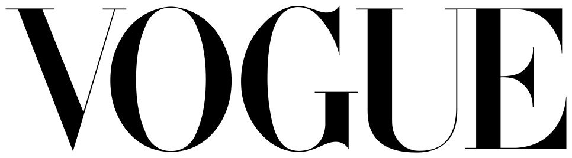
01 Vogue
Didone caps: hairline serifs against heavy stems, letters fitted almost touching
-
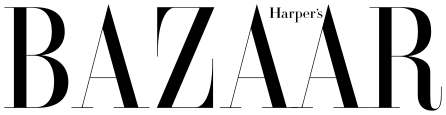
02 Harper's Bazaar
Didone caps with hairline diagonals, a small serif “Harper’s” tucked above the second A
-
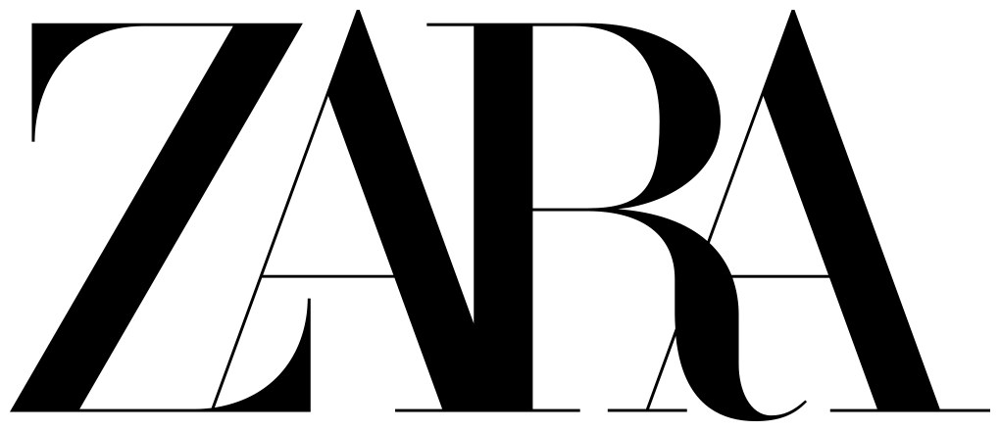
03 Zara
Didone caps set so tight they overlap and share strokes; hairline crossbars
-
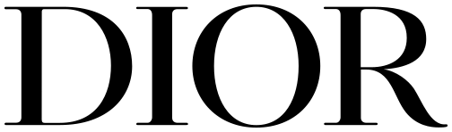
04 Dior
High-contrast caps with flat hairline serifs and a wide, round O
B Warm humanist sans
Some stroke modulation, without the drama.
-
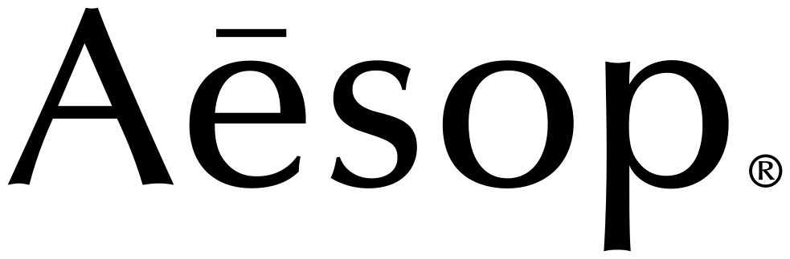
05 Aesop
Flared letters with no true serifs, calligraphic contrast, a macron over the e
-
06 Ubuntu
Light humanist sans, even stroke, open round forms; orange square symbol
-
07 Slack
Heavy lowercase sans, tight spacing, flat-cut terminals; four-color hash symbol
-
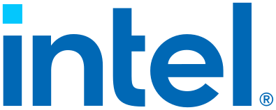
08 Intel
Lowercase sans with open apertures, angle-cut t and e, a square dot on the i
C Engineered, technical, precise
The opposite pole from fluid.
-
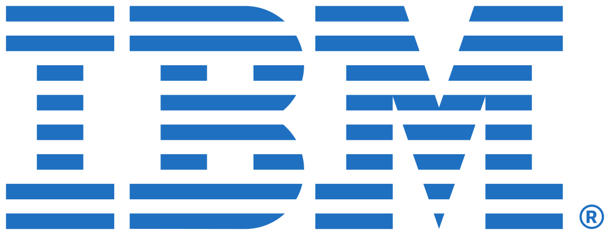
09 IBM
Slab-serif caps sliced by eight horizontal stripes, one blue
-
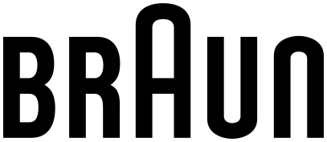
10 Braun
Condensed geometric caps with rounded corners; the A rises above the cap line
-
11 Siemens
Bold sans caps in petrol green, even weight, open spacing
-
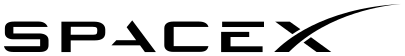
12 SpaceX
Extended caps built from bars; A without a crossbar, X arm sweeping into a long arc
D Fluid script and signature
Fluid taken literally.
-
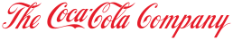
13 The Coca-Cola Company
Spencerian script: pressure contrast, looping capitals, a swash tail under the word
-
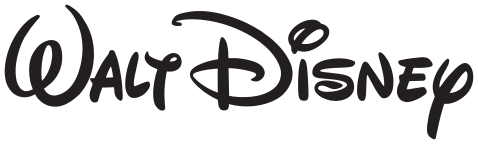
14 The Walt Disney Company
Signature-style script with an uneven baseline and oversized W and D
-
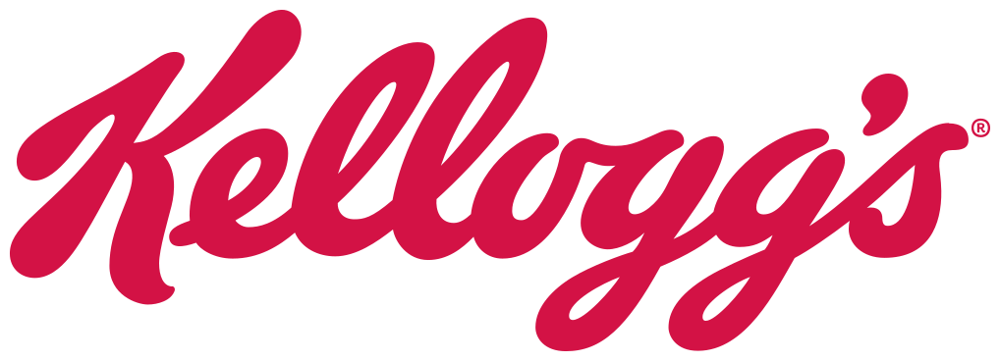
15 Kellogg's
Heavy connected script leaning right, thick downstrokes, a swashed K
-
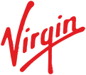
16 Virgin
Quick handwritten signature: tall V, the g’s descender sweeping back under the word
E Geometric with tension
Grown-up geometric, not round one’s softness.
-
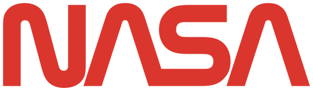
17 NASA
The 1975 “worm”: one continuous stroke weight, As without crossbars, rounded turns
-
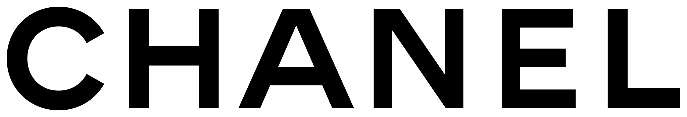
18 Chanel
Geometric caps, even weight, wide letterspacing, a near-circular C
-
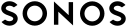
19 Sonos
Geometric caps spaced wide and mirror-symmetric around the central N
-
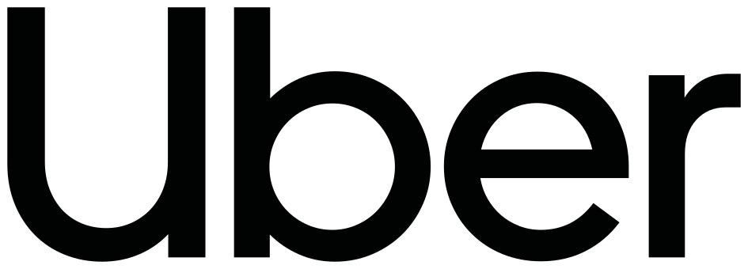
20 Uber
Tight geometric lowercase with a capital U, one weight, round bowls
F Serif and transitional
Includes the Didot end round one moved away from.
-
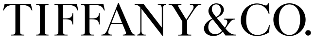
21 Tiffany & Co.
Serif caps with moderate contrast and a compact ampersand, set fairly tight
-
22 Rolex
Wide serif caps in green, wedge serifs, moderate contrast
-
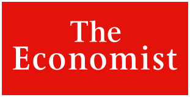
23 The Economist
Serif upper- and lowercase reversed out in white from a red rectangle
-
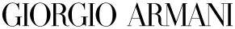
24 Giorgio Armani
Condensed Didone caps: tall, narrow, hairline serifs, tight spacing